Introdução ao RStudio + GitHub
ESTAT0109 – Mineração de Dados em Estatística
Você pode fazer tudo isso com  e 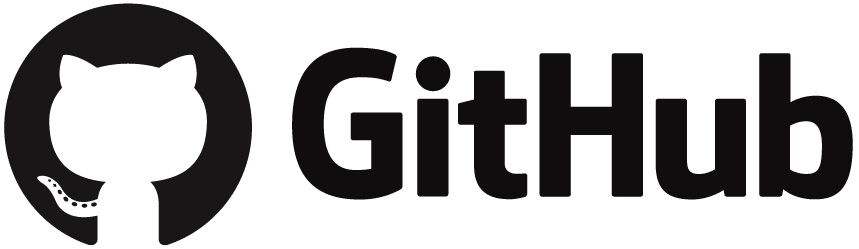
e 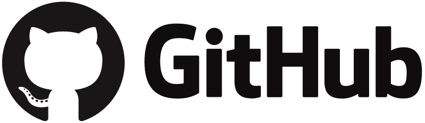
Você terá:
Um histórico completo de aprendizagem.
Um repositório que mostra sua evolução.
Uma base reutilizável para projetos futuros.
É como criar seu próprio material interativo de Mineração de Dados!
Objetivo da aula
- Entender o que é e para que serve o e o .
- Saber como criar um repositório de projeto.
- Atualizar repositório no via
 .
.
O que é o ?
Git é uma ferramenta que ajuda a controlar e gerenciar mudanças em arquivos ao longo do tempo.
Ele permite que você salve versões diferentes de um trabalho à medida que faz alterações, de modo que possa voltar para versões anteriores se algo der errado ou se precisar revisar mudanças feitas.
Por que o é importante?
Evita perda de trabalho: Se você estiver escrevendo código ou criando qualquer tipo de documento, o Git permite que você salve diferentes versões do seu trabalho. Assim, se algo der errado, você pode voltar a uma versão anterior.
Facilita o trabalho em equipe: Quando várias pessoas estão trabalhando no mesmo projeto, o Git permite que cada uma trabalhe de forma independente e depois una os trabalhos de maneira organizada. Isso evita que as alterações de uma pessoa sobrescrevam as de outra.
Organização e rastreamento: O Git mantém um histórico completo de todas as mudanças feitas em um projeto, permitindo saber quem fez o quê e quando.
Criando um repositório no
Após fazer login no GitHub, Clique em
+no canto superior direitoEm seguida, clique em
New repository
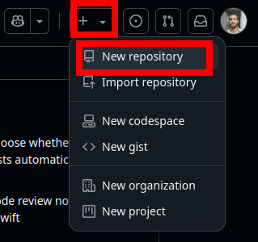
Criando um repositório no
Em
Repository namedê um anome ao repositóroEm
Descriptionfaça uma descrição do repositórioMarque a opção
PublicouPrivateEm
Initialize this repository with:marque a opçãoAdd a README fileClique em
Create repository
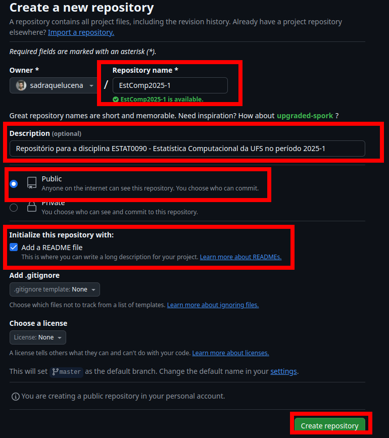
Integrando e
+ : integração prática
O RStudio possui integração nativa com o Git e GitHub
Ou seja, é possível sincronizar um repositório GitHub a um repositório local
Isso significa que você pode ligar o repositório do GitHub (na nuvem) ao seu projeto no computador. Assim, o que você altera localmente pode ser enviado para o GitHub — e vice-versa.
Para isso, seguimos os seguintes passos:
+ : integração prática
Fazemos uma cópia do repositório do GitHub na máquina local usando o RStudio.
- Quando já há uma cópia na máquina, começamos o trabalho atualizando o projeto local com as alterações que estão no GitHub (
pull).
- Quando já há uma cópia na máquina, começamos o trabalho atualizando o projeto local com as alterações que estão no GitHub (
Trabalhamos normalmente no projeto: scripts, análises, relatórios…
Usamos o Git para registrar as alterações (
commit) e enviar para o GitHub (push).
+ : criando o projeto local
No canto superior direito do RStudio clique em
File > New ProjectClique em
Version control
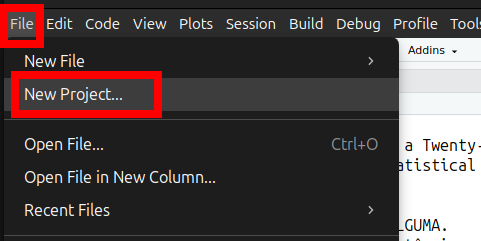
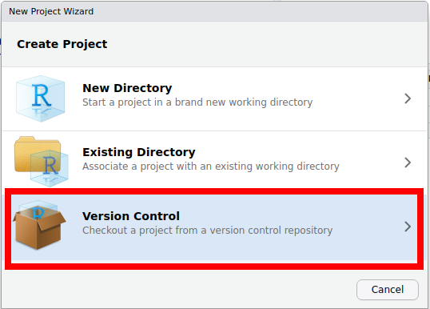
+ : criando o projeto local
- Clique em
Git
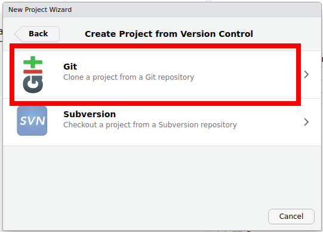
+ : criando o projeto local
No campo
Repository URL, cole a URL do repositório que você criou no GitHubEm
Create project as subdirectory of, escolha o diretório em que o repositório do GitHub será copiado na máquina localClique em
Create Project
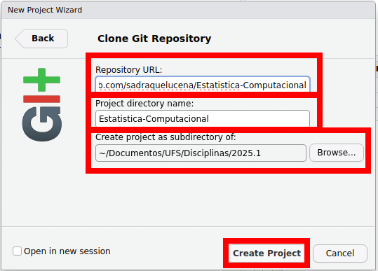
+ : criando o projeto local
Se você estiver clonando um repositório público, o RStudio irá criar uma cópia do projeto localmente, sem exigir login.
Se o repositório for privado, o GitHub pedirá que você se autentique (login e senha ou token).
- Uma vez que já existe o projeto na máquina local, você só precisa acessar o diretório local (pasta) e clicar no arquivo com extensão
.Rprojpara abrir o projeto no Rstudio, sem necessidade de clonar o projeto novamente na máquina.
Enviando alterações para o via
- Depois de salvar as atualizações do seu projeto local, você pode enviar essas alterações para o repositório no GitHub diretamente pelo RStudio. Você deve fazer:
- No quadrante superior direito clique em
Commit
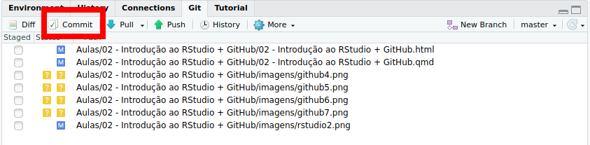
Enviando alterações para o via
RStudio mostra os arquivos que foram alterados. Selecione-os.
No campo
Commit messageescreva um comentário contendo o que foi atualizado (sugestão: não use caracteres especiais ou acentos)Clique em
Commit
Enviando alterações para o via
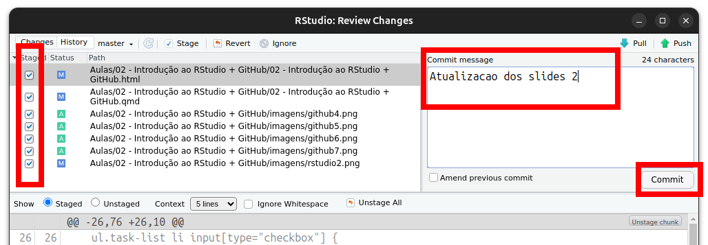
Enviando alterações para o via
- Após finalizado o envio, clique em
Close
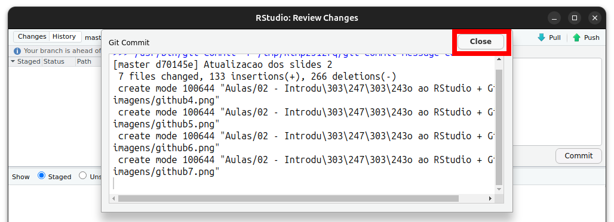
Enviando alterações para o via
Note que irá aparecer a mensagem
Your branch is ahead of 'origin/master' by 1 commit(isto indica que você tem alterações ainda não enviadas ao GitHub)Clique em
Push
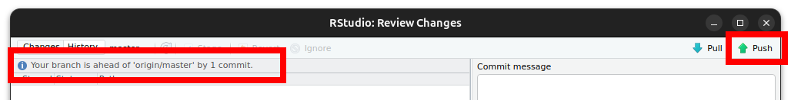
Enviando alterações para o via
- Em máquinas com Windows o Rstudio redirecionará para você fazer login na sua conta GitHub no seu navegador. Em Linux preencha o campo
Username for 'https://github.com'coloque login e clique emOK
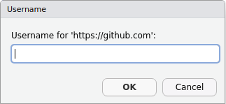
Enviando alterações para o via
Ainda em Linux, no campo
Personal Access Tokeninsira o token criado no GitHubClique em
OK
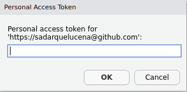
Enviando alterações para o via
- Caso apareça a mensagem abaixo, os arquivos foram atualizados no repositório do GitHub.
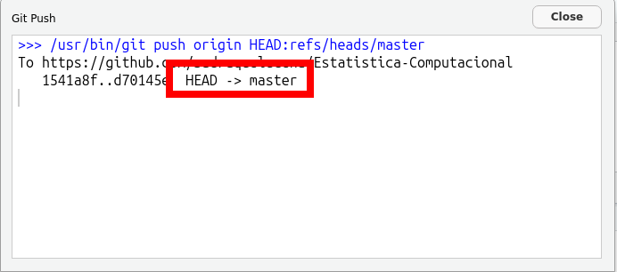